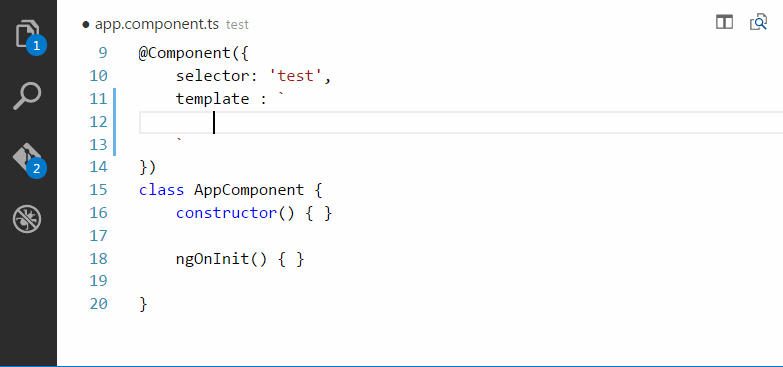
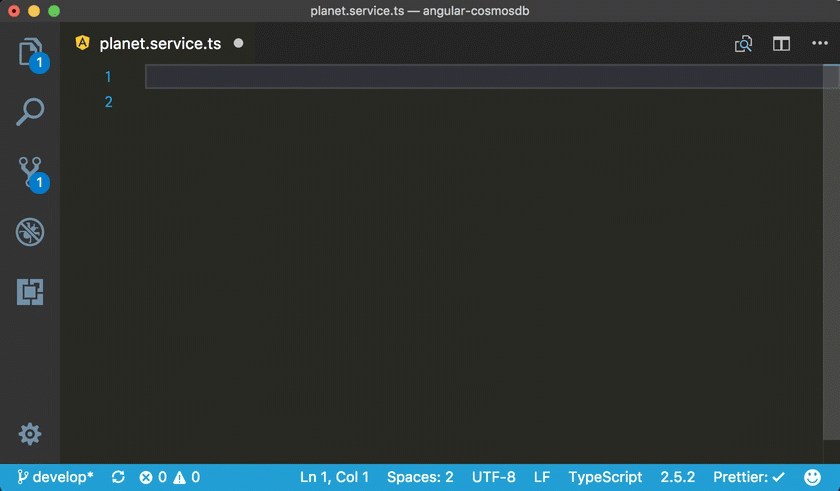

Welcome to Angular A
Introduction
Angular is a platform and framework for building single-page client applications using HTML and TypeScript. Angular is written in TypeScript. It implements core and optional functionality as a set of TypeScript libraries that you import into your applications.
The architecture of an Angular application relies on certain fundamental concepts. The basic building blocks of the Angular framework are Angular components that are organized into NgModules. NgModules collect related code into functional sets; an Angular application is defined by a set of NgModules. An application always has at least a root module that enables bootstrapping, and typically has many more feature modules.
What's Angular?
What Angular is, what advantages it provides, and what you might expect as you start to build your applications.
Angular is a development platform, built on TypeScript. As a platform, Angular includes:
- A component-based framework for building scalable web applications
- A collection of well-integrated libraries that cover a wide variety of features, including routing, forms management, client-server communication, and more
- A suite of developer tools to help you develop, build, test, and update your code
With Angular, you're taking advantage of a platform that can scale from single-developer projects to enterprise-level applications. Angular is designed to make updating as straightforward as possible, so take advantage of the latest developments with a minimum of effort. Best of all, the Angular ecosystem consists of a diverse group of over 1.7 million developers, library authors, and content creators.
Plugins in Vcode recommend use to Angular
Angular 2 TypeScript Emmet
Angular 2 TypeScript Emmet suport for VS Code
Have you ever missed zen coding support for Angular 2 typescript files inside vscode? If is your answer yes then following extension to Visual Studio Code solve you issue.

Install
Angular Language Service
this extension is recommended because it is easier to write code in angular
 Install
Install
Angular Files
VS Code Angular Files
This extension allows quickly scaffold angular 2 file templates in VS Code project.
 Install
Install
Angular Snippets
This extension for Visual Studio Code adds snippets for Angular for TypeScript and HTML.

Install
Angular Support
This extension for Visual Studio Code adds snippets for Angular for TypeScript and HTML.
Install
How to install
Firts you need install Node js in your computer and NPM after install node executed this code:
npm install -g @angular/cli
Create a workspace and initial application
ng new nameYourFolder
How to create an Angular component the first is the full command and the second is the recommended shortcut use this
ng generate component namecomponent
ng g c namecomponent
Install bootstrap
npm install bootstrap jquery @popperjs/core
So now to install bootstrap in Angular.json file, put it at this address remplace be careful
"styles": [
"node_modules/bootstrap/dist/css/bootstrap.min.css",
"src/styles.scss"
],
"scripts": [
"node_modules/jquery/dist/jquery.min.js",
"node_modules/@popperjs/core/dist/umd/popper.min.js",
"node_modules/bootstrap/dist/js/bootstrap.min.js"
]